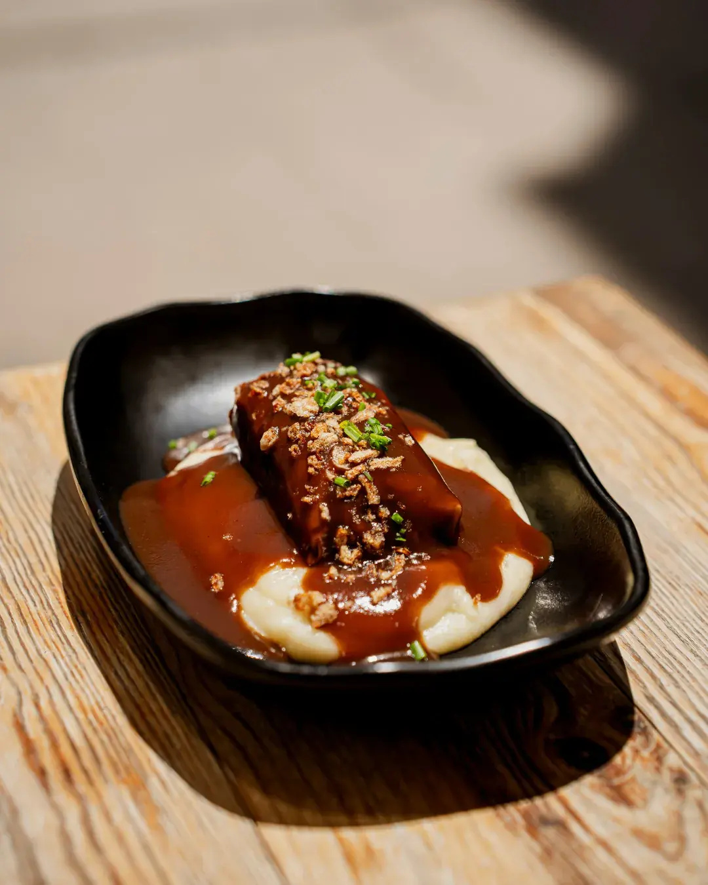
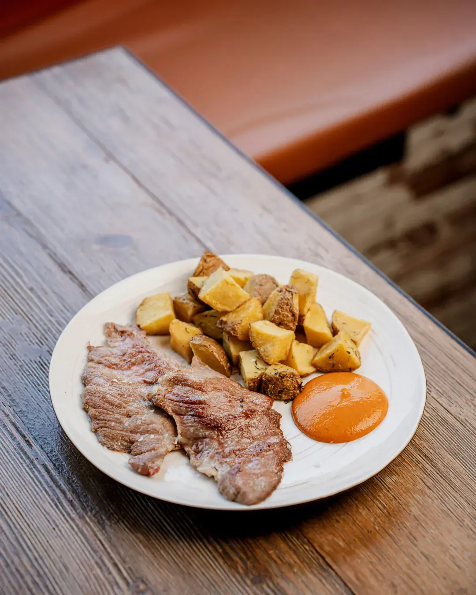
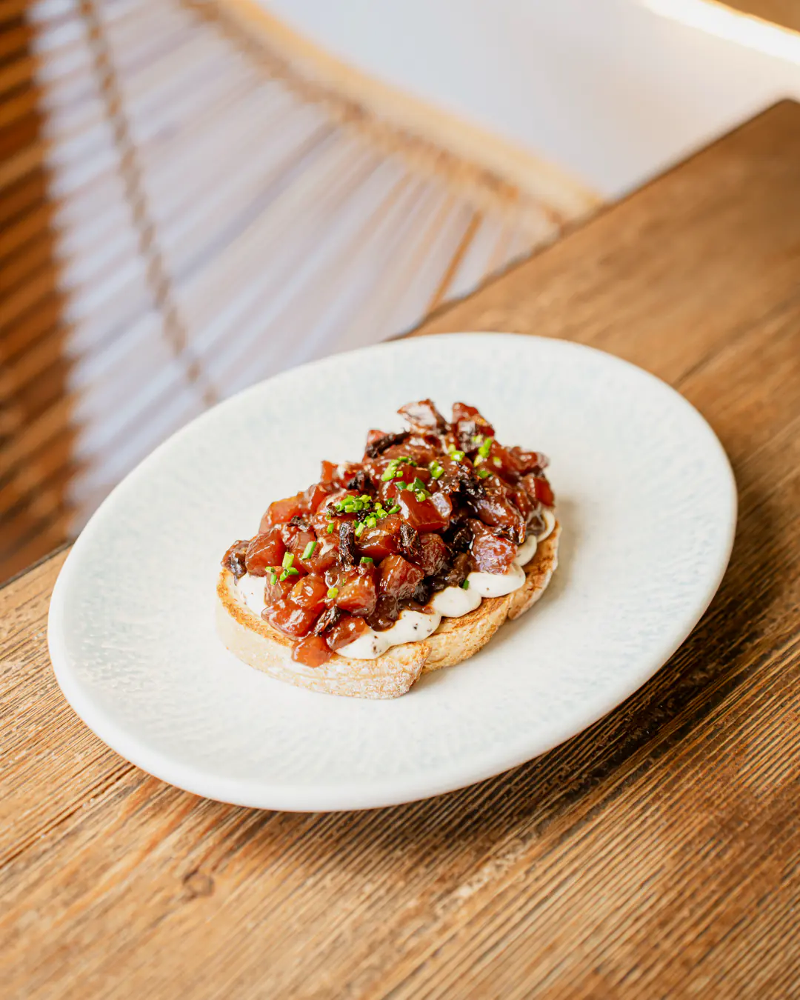
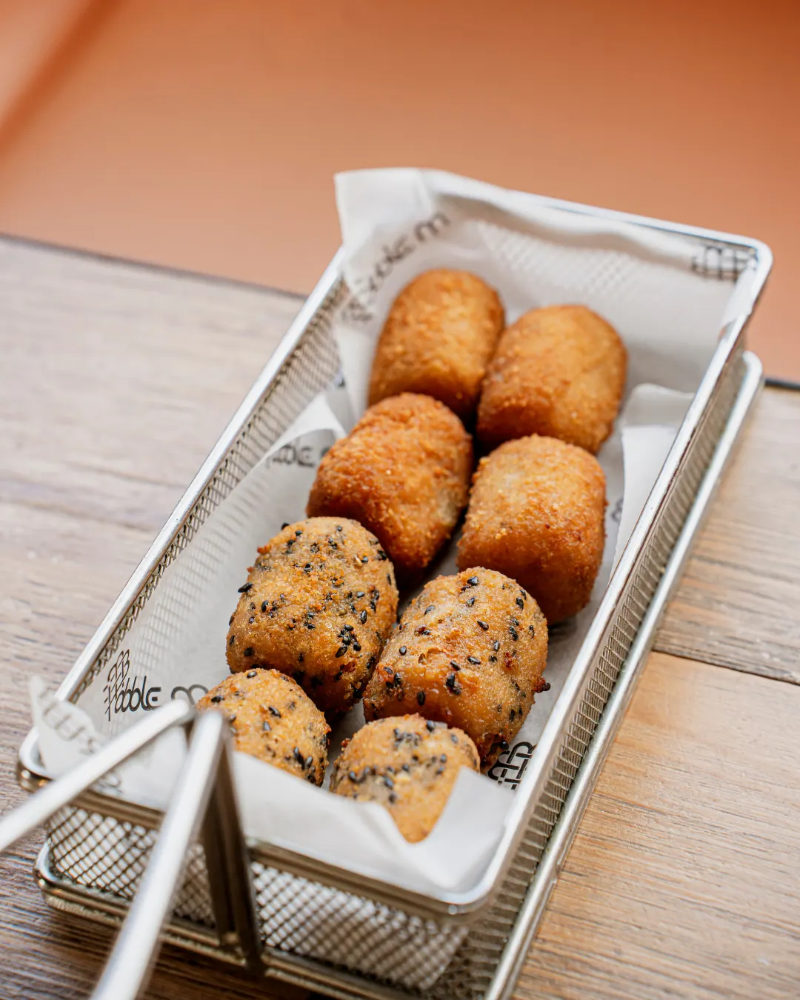
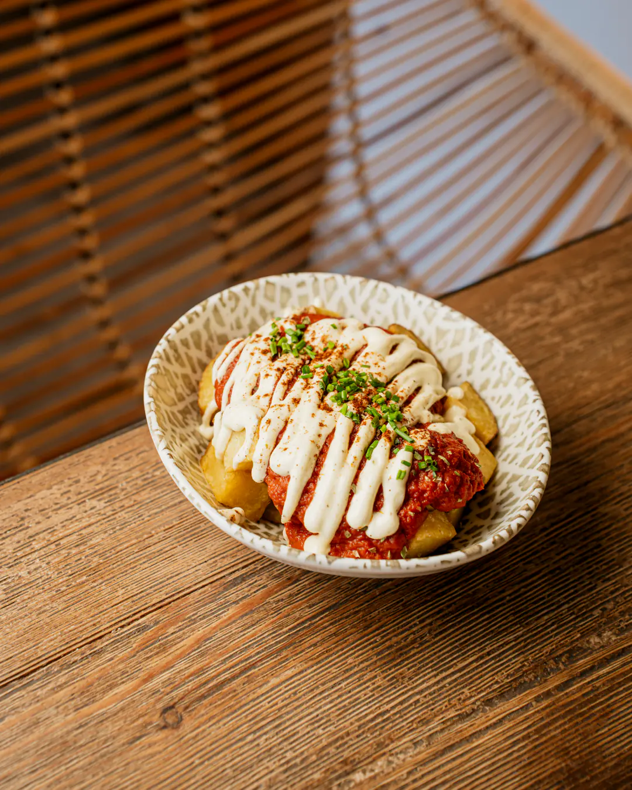
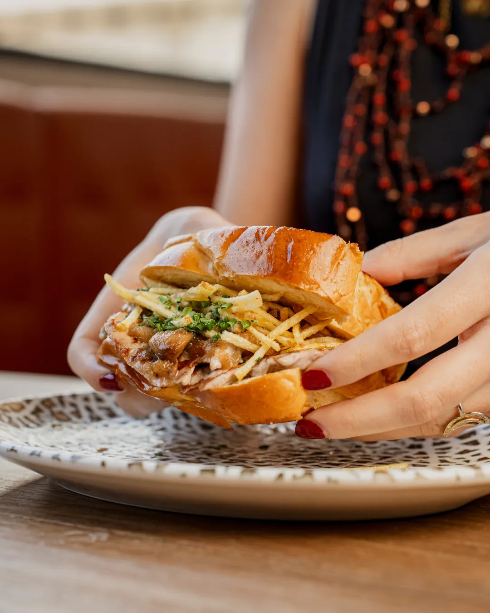
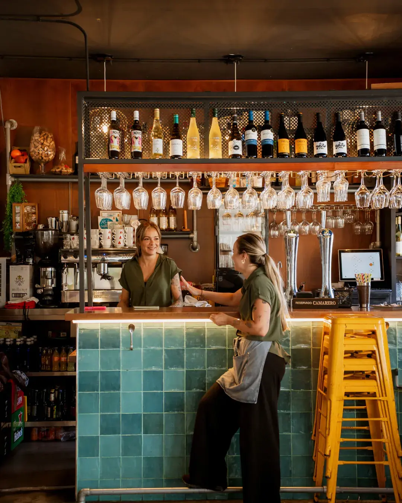

Doble M, bar de tapas en Gelves, Sevilla.
4,6763 valoraciones en Google
Gelves · a 5 min de Sevilla

Tapas de autor
en Gelves
Cogemos la cocina de casa y le damos una vuelta.
Ensaladilla, pringá, carrillada o cabeza de lomo, con técnicas de ahora y raciones para compartir. Abrimos en 2019 y desde entonces la carta no ha parado de moverse.
Estamos en Gelves, en pleno Aljarafe, cruzando el río y a cinco minutos de Sevilla.
Ver la carta- Desde 2019en Gelves
- Todos los díasmediodía y noche
- Terrazay salón interior
- 10–20 €por persona

Los imprescindibles
Si es tu primera vez en Doble M, empieza por aquí. Son los platos que más se repiten en las mesas y en las reseñas.
- Canelón de carrilladapuré de patatas y queso de cabra
- Croquetas del chef
- Patatas bravas
- Mantecaítosolomillo al whisky
- Tosta de atún Gadiramayo trufada y tomates secos
Platos destacados de Doble M

Croquetas del chef

Patatas bravas

Mantecaíto
Doble M
por dentro
Barra de azulejo verde, banquetas naranjas, madera y plantas colgando sobre las mesas. Dentro se está a gusto todo el año y, cuando acompaña el tiempo, hay terraza.
Ver Instagram
Galería de Doble M en Gelves
Lo dicen
quienes vienen
4,6
763 valoraciones
en Google
“Nunca imaginarías que un bar tan escondido pudiera ofrecer un atún y una comida tan deliciosa. Un ambiente moderno con esencia de bar de barrio.”
Juan Gallardo
“Ya hemos repetido varias veces. Nos gusta mucho porque son sabores diferentes y platos bien elaborados.”
Marta Basso
“Teníamos muchas ganas de probar este bar, lo que no sabíamos es que nos fuera a gustar tanto.”
Sara Domínguez Cárcel
Doble M
en casa
Los platos de la carta, en tu mesa. Pide a domicilio por Uber Eats o Glovo, o llámanos y pasa a recogerlo.
Nos vemos
en Gelves
| Día | Mediodía | Noche |
|---|---|---|
| Lunes | 13:30–16:00 | 21:00–23:30 |
| Martes | 13:30–16:00 | 21:00–23:30 |
| Miércoles | 13:30–16:00 | 21:00–23:30 |
| Jueves | 13:30–16:00 | 21:00–23:30 |
| Viernes | 13:30–16:00 | 21:00–23:30 |
| Sábado | 13:30–16:00 | 21:00–23:30 |
| Domingo | 13:30–16:00 | 21:00–23:30 |
Servicios
Terraza y salón interior
Para llevar y a domicilio
Preguntas
frecuentes
¿Dónde está Doble M?
En C. Carmen Romero Bizcocho, 8, local 1A5, 41120 Gelves (Sevilla), en el Aljarafe, a unos cinco minutos de Sevilla.
¿Qué horario tiene?
Abrimos todos los días, de lunes a domingo, de 13:30 a 16:00 y de 21:00 a 23:30.
¿Cómo puedo reservar mesa?
Desde esta web con el botón «Reservar mesa» o llamando al 654 32 41 52. Para grupos grandes, mejor por teléfono.
¿Tenéis terraza?
Sí. Tenemos terraza y salón interior con aire acondicionado.
¿Se puede pedir para llevar?
Sí. Puedes pedir a domicilio en Uber Eats y Glovo, o llamarnos al 654 32 41 52 y pasar a recogerlo.
¿Cuánto cuesta comer en Doble M?
El precio medio está entre 10 y 20 € por persona. Las tapas van desde 4 € y hay raciones y platos para compartir.
¿Tenéis información de alérgenos?
Sí. En nuestra carta tienes los alérgenos de cada plato y también puedes preguntar al equipo en sala.